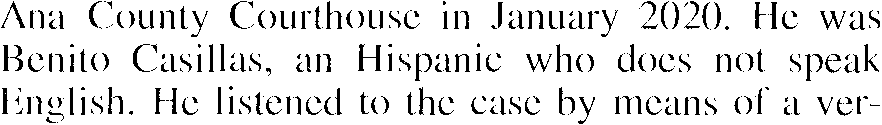
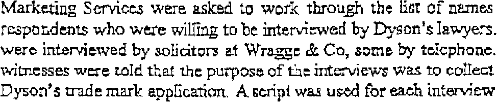

As powerful as the neural revolution was in the 90s, new advances in OCR research have moved beyond it. The latest OCR software is now capable of recognizing total words, not individual characters! Such algorithms try to match the image of a whole word to a word: the contour and shape of pixel cloud X looks like the Dutch word “Familieleden”, the pixel cloud Y looks like the word “alleged” etc.
This technology is called “Word Image Decoding”, it has some basic similarity with the algorithms used for speech recognition. It “decodes” the word images without a prior segmentation of the words into characters.
The specific strength of word image decoding lies in the recognition of degraded images where characters for instance touch (“ligatures”) or are broken. That’s because degraded word images are less defaced than degraded character shapes. An individual character can be so damaged that it’s barely recognizable — even to the human eye. A degraded word offers more clues: it’s unlikely that each character will be degraded to the same extent! As codes get broken bit by bit, difficult words get recognized by starting with the easier characters inside them.


Because there ’s more context, it’s easier for the system to guess what the shapes mean. Given the example below, isn’t easier to recognize complete words than individual, segmented character shapes…?
Where does this technology come from? — Reaping the benefits of the neural revolution — … Or do word recognition — Each expert casts his vote — Autolearning font shapes — Putting more feet on the street — … With a document revolution thrown in
Home page — Intro — Scanners — Images — History — OCR — Languages — Accuracy — Output — BCR — Pen scanners — Sitemap — Search — Contact – Feedback